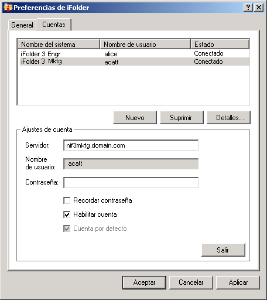

Configuración de una cuenta de iFolder
Debe configurar una cuenta de iFolder como mínimo antes de crear o compartir carpetas iFolder en el sistema. Sólo es posible crear una cuenta por cada servidor o equipo host determinado, pero puede disponer de varias cuentas.
Un usuario con una entrada local y una cuenta de usuario diferentes puede entrar en el mismo equipo en otro momento y utilizar iFolder para crear su propio conjunto de carpetas iFolder bajo dicha identidad. iFolder sólo sincroniza las carpetas iFolder que pertenecen al usuario activo.
-
Utilice uno de estos métodos para acceder a la configuración de cuenta:
- La primera vez que inicie iFolder tras la instalación, iFolder le solicitará que configure una cuenta de iFolder. Haga clic en Sí para ir directamente a Preferencias de iFolder > pestaña Cuentas.
- Haga clic con el botón derecho en el icono de aplicación iFolder
 en el área de notificaciones y, a continuación, seleccione Cuentas para abrir el recuadro de diálogo Preferencias de iFolder en la pestaña Cuentas.
en el área de notificaciones y, a continuación, seleccione Cuentas para abrir el recuadro de diálogo Preferencias de iFolder en la pestaña Cuentas.
-
Haga clic en Nuevo para acceder al área Account Settings (Ajustes de cuenta).
-
Especifique los valores siguientes:
Parámetro Descripción Servidor
Nombre DNS o dirección IP del servidor empresarial iFolder en el que tiene una cuenta. Por ejemplo: svr21.ejemplo.com o 192.168.1.1.
Usuario
Introduzca su identidad de usuario para esta cuenta. El administrador de iFolder decide si el formato que debe utilizarse es el ID de usuario de red (nombre común de LDAP) o la dirección de correo electrónico.
Por ejemplo, si su nombre es John Smith con el ID de usuario jsmith y la dirección de correo electrónico john.smith@ejemplo.com, el administrador configura el ajuste del servidor que determina cuál de los dos formatos debe aceptarse en el campo Usuario con fines de autenticación.
Contraseña
Contraseña del usuario.
Recordar contraseña
Seleccione Recordar contraseña para entrar automáticamente en la cuenta de iFolder cada vez que inicie el equipo. Para obtener información, consulte Entrada a una cuenta de iFolder.
Si cambia la contraseña de red, la autenticación automática no se realizará correctamente la próxima vez que iFolder intente entrar en la cuenta de iFolder. iFolder le solicitará que entre con la nueva contraseña y le permitirá especificar y guardar la contraseña nueva.
Enable Account (Habilitar cuenta)
Seleccione Enable Account (Habilitar cuenta) para permitir la sincronización en segundo plano de las invitaciones de iFolder, la lista de usuarios y las carpetas iFolder de esta cuenta.
Default Account (Cuenta por defecto)
Seleccione Default Account (Cuenta por defecto) para que se seleccione esta cuenta por defecto en la lista desplegable de cuentas al crear carpetas iFolder.
 -
Haga clic en Aceptar o en Log In (Entrar).
Si se le proporciona un certificado, revíselo y, a continuación, haga clic en Aceptar para aceptarlo. La cuenta aparece en la lista de cuentas con el estado Logged In (Conectada). iFolder iniciará la sincronización de las carpetas iFolder existentes, las notificaciones de iFolder y la lista de usuarios de dicha cuenta.
-
Haga clic en Aceptar para cerrar el recuadro de diálogo Preferencias de iFolder.
-
Para configurar carpetas iFolder para la cuenta, utilice uno de estos métodos:
- Si existen carpetas iFolder disponibles para la cuenta, aparecerá un mensaje de notificación de iFolder. Haga clic en el mensaje para abrir el recuadro de diálogo de las carpetas iFolder. Continúe con Configuración de una carpeta iFolder disponible.
- Si no existen carpetas iFolder para la cuenta o si desea empezar a añadir carpetas iFolder directamente, haga clic con el botón derecho en el icono de aplicación iFolder y, a continuación, seleccione Carpetas iFolder para abrir la ventana correspondiente. Continúe con Creación de una carpeta iFolder.